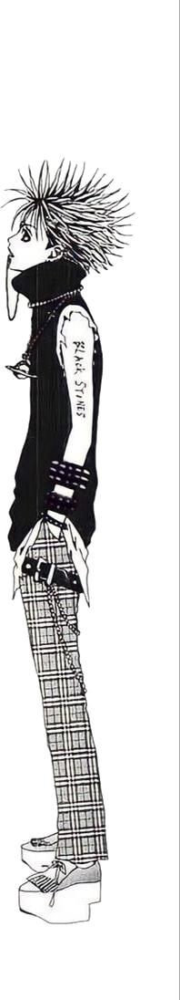
Alfred is a graphic designer and visual artist working in dark surrealism, building worlds from photographs, shadows, and things that sit just outside of logic. With over a year of practice in Adobe Photoshop, his work spans photo manipulation, poster design, and editorial image-making. He has also worked in motion, editing for a YouTube creator. Every piece begins with a feeling that doesn't have a name yet.
Based in Kerela, India. Open to commissions, editorial collaborations, and exhibition inquiries.
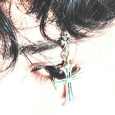
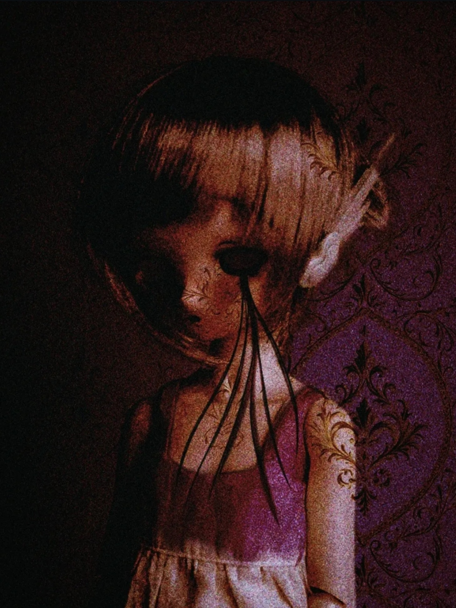
Porcelain does not bruise. It does not bend or bleed. It simply holds its shape until, one day, without warning, it doesn't. This is a portrait of that moment not the breaking, but the long stillness before it. The grief that accumulates like pattern on a wall. The darkness that arrives so gradually you mistake it for the room itself. This is a portrait of that moment before the crack not the breaking, but the long and wordless season that precedes it. The grief that settles into a body the way pattern settles into wallpaper, so slowly, so completely, that you forget there was ever a wall beneath. The darkness that moves in without announcement and rearranges everything until you can no longer tell what is shadow and what is simply you.
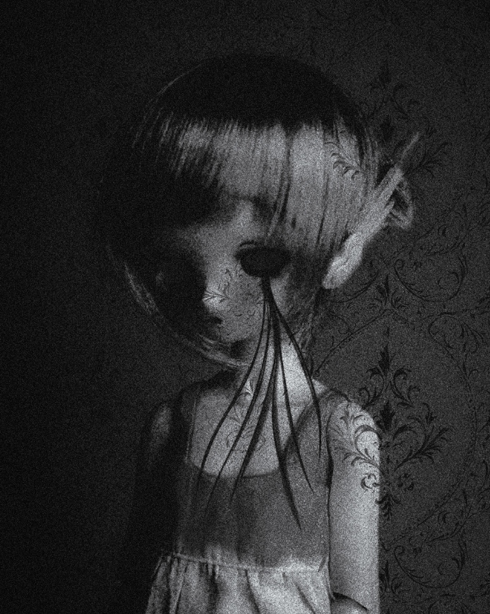
:That is what porcelain does, it keeps the secret perfectly, right until the end.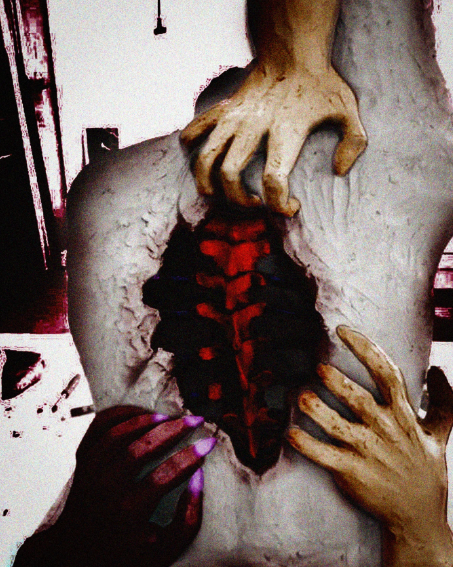
"Rip Me Apart" is a clay sculpture exploring the idea of emotional vulnerability and exposure. The piece depicts hands tearing open a torso to reveal the spine beneath using the body as a metaphor for being completely laid bare by another person. The work went through several stages, from raw clay to digitally color-graded finishes, each version bringing a different mood to the same form. To be truly known is to be taken apart. This is what that looks like. The central question the piece asks is simple
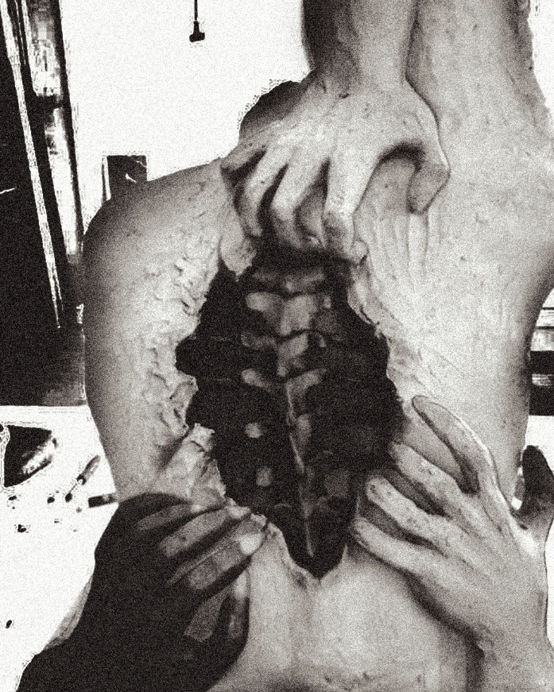
:is being truly seen by someone an act of love, or does it always cost you something?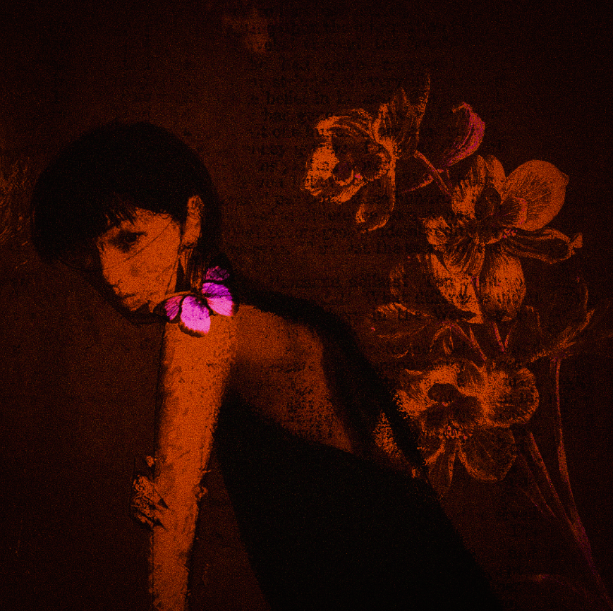
Some things are beautiful because they will kill you. The figure doesn't flinch. She holds the dead wood like a spine, like a secret, while the orchids press themselves into the wall behind her ghost-printed, half-remembered, the kind of flowers you find in old letters you shouldn't have kept. The butterfly lands anyway. It always does. Drawn to what it cannot survive. Color is the only honest thing here. Ember for the moment before you know. Crimson for want. Ash for what remains when the wanting is done. Blue for the cold that comes after.
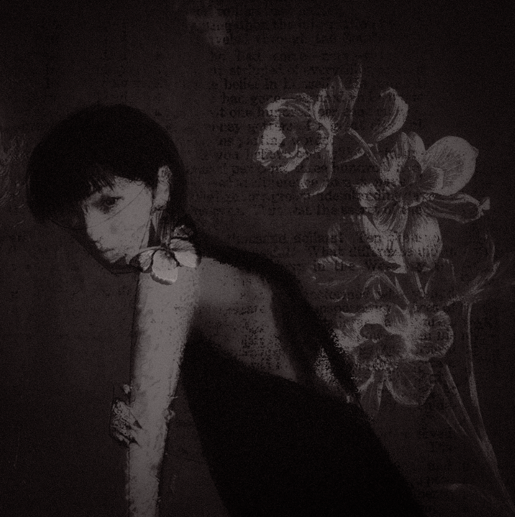
:Poison never tastes like poison. That's the whole point.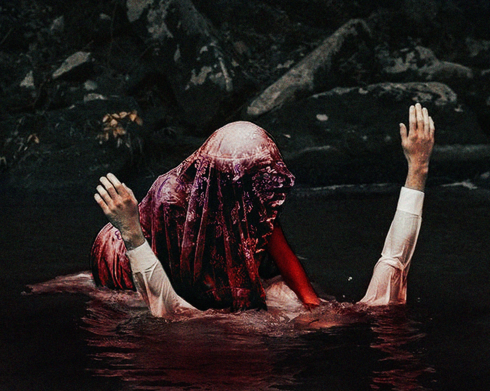
There is a body that refuses to disappear. Hands raised not in surrender, but in testament. The water does not swallow, it bears witness. Draped and faceless, the figure exists somewhere between drowning and devotion. Between a baptism no one asked for and one that cannot be undone. It folds, it reaches, it surrenders halfway. Hands open, not grasping, just offering. The moment devotion becomes weight, when being held and being held down stop feeling different.
Lace for the vow. Shadow for the doubt. Crimson for what it costs.
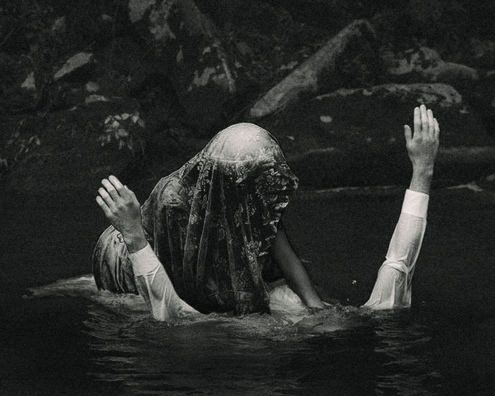
:The water isn't the enemy. That's the hardest part.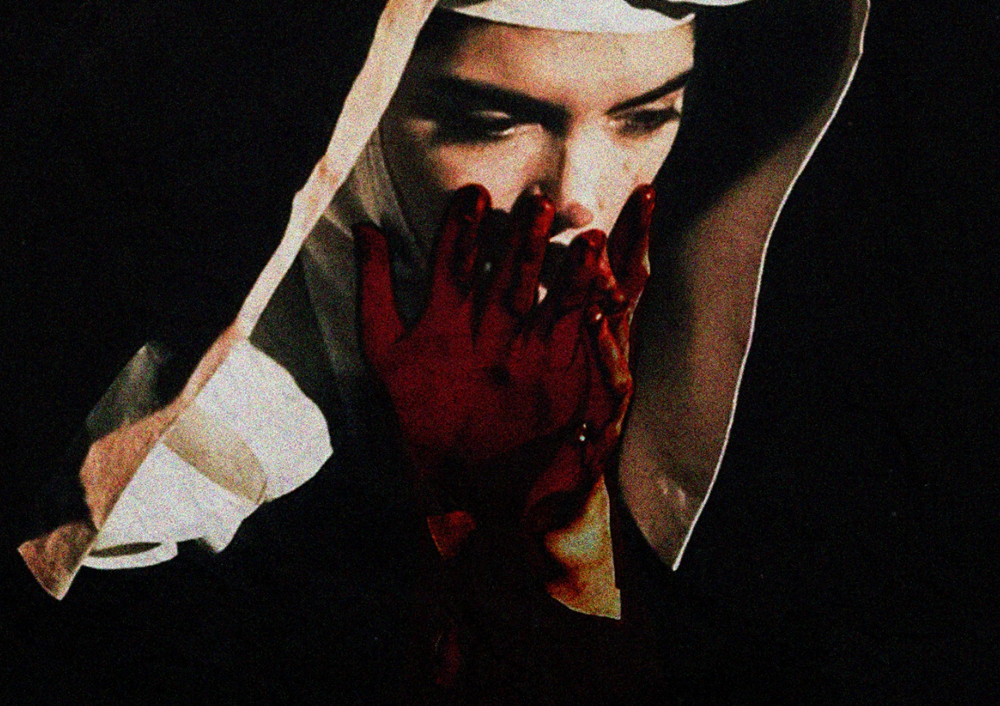
The central focus of this piece is the hands rendered in a deep, almost arterial crimson, they become something both sacred and sinister. Pressed together in a gesture of prayer, they betray their devotion through their color. The figure wears the habit of a nun, yet these hands suggest she carries something darker beneath her piety. The contrast between the white of the veil and the red of the hands is intentional, purity and corruption existing in the same body, the same prayer, the same soul. The edit deepens this tension. By intensifying the grain and the richness of the red tones, the hands seem to bleed into the frame itself, no longer just a detail but the entire soul of the image. "They silence her, or perhaps she silences herself. covering her mouth as though holding back something she was never meant to say"
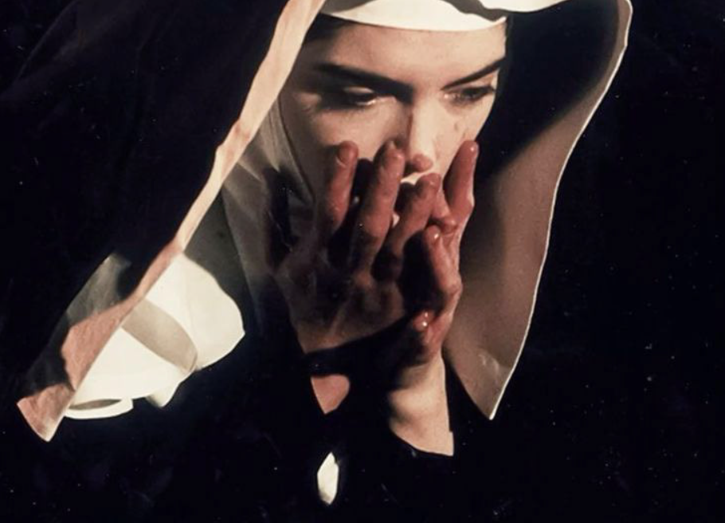
:faith worn like a woundsome of the people whose work lives in my head rent-free.
Open to editorial commissions, exhibition features, collaborative projects, and licensing inquiries. (Instagram Preferred)